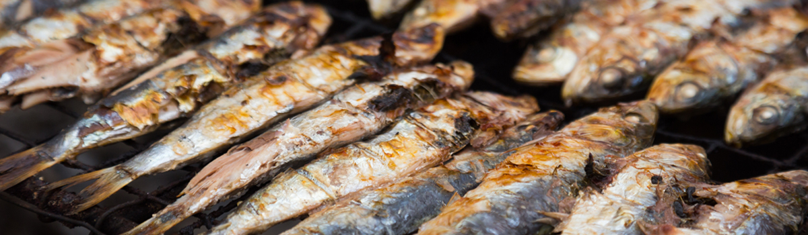
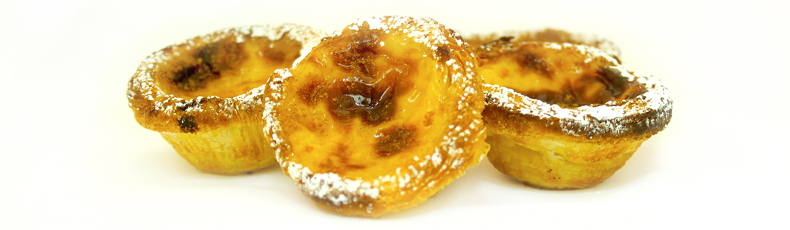

La gastronomía postuguesa
Sardinas y otros pescados y mariscos frescos
Portugal tiene una amplia costa en el Atlántico, razón por que la pesca es una fuente natural de ingresos y el pescado es de lo mejor que se puede probar en Europa. La sardina a la plancha está llena de sabor y es muy abundante además de que constituye una opción barata. Las sardinas se sirven tradicionalmente en las barbacoas, en restaurantes junto a la playa y en las fiestas, como por ejemplo en los días 23 y 24 de junio por el São João en Oporto, donde se acompañan con patatas y pimientos a la parrilla.
Postres portugueses y el Pastel de Belém
A los portugueses se les conoce su fama como aficionados de postres y por aquí hay literalmente centenas de postres desde pasteles, tartas, mousses, pudines y riquísimas mesclas de huevo con azúcar para comer con cuchara. Cada región tiene su propia especialidad, pasteles y postres conventuales a originar desde el siglo XV, que han contribuido para el auge y todo el interés en los dulces. El azúcar se introdujo en este momento convirtiéndose en un abundante ingrediente gastronómico de las colonias portuguesas, y los huevos, especialmente las yemas, también eran abundantes ya que Portugal era el mayor productor europeo de huevos (las claras eran usadas para fabricar las hostias y las yemas fueron entonces usadas para aprovechar lo que sobraba del huevo). Almendras son otro ingrediente tradicional muy favorito de los postres conventuales, así como la canela. Así es porque los postres portugueses resultan tan dulces. Un famoso pastel que se desarrolló en la cocina conventual fue el pastel de nata. A pesar de existieren muchas variaciones, la receta original en Belén (Lisboa) es un secreto muy bien guardado. Este es uno de los más famosos postres portugueses que han hecho su marca en otros países.
Francesinha
Este plato se está convirtiendo en un moderno clásico y tuvo origen en el norte de Portugal en la década de 1950/60. Hoy es un verdadero plato emblemático de la ciudad de Oporto. La Francesinha es un grande sándwich con diversas capas con carne, jamón, salpicón, huevo y a veces tocino, cubierto por queso derretido y una salsa de tomate, cerveza y chiles picantes. La idea surgió a partir del original francés Croque Monsieur, pero fue adaptada por los portugueses a su cultura y sabor. Se sirve con patatas fritas pero es su salsa ligeramente picante que le da un asombroso sabor. Sin embargo, tanto los adultos como los niños pueden disfrutarla. Hay una versión más ligera en pan tostado, en la que tendrá ingredientes similares a la excepción de la carne y con una salsa light. Debe definitivamente probarla, cualquiera que sea su versión.
Feijoada
Las feijoadas, es decir, los guisos de judías blancas o pintas acompañados con matanza, son tradicionales en todo el país. Influyeron mucho en la cocina de Brasil y en la cocina de las colonias africanas, que introdujeron variaciones locales que han revertido en la tradición culinaria de la metrópoli.
Alheiras
Alheira es una prestigiosa choriza ahumada portuguesa cuyos principales ingredientes son carne de pollo, de cerdo, pan, aceite de oliva, sala, ajo y paprika. La carne de caza, de res, pato, pimientos, jamón también se utilizan. Tiene la forma de una herradura y es hecha de tripa de cerdo rellena con una fina pasta de carnes y pan picados. Hecho a la mano en la región norteña de Trás-os-Montes y en la región del centro en Beira Alta, la variedad más afamada es la que es producida en Mirandela. La alheira puede ser cocinada en la barbacoa, o frita en su grasa, o parcialmente cocida y terminada en el horno. A menudo se sirve con arroz y patatas fritas, pero lo más tradicional es servirla con verduras cocidas o salteadas.
El origen de esta choriza se remonta a finales del siglo XV/ principios del siglo XVI, y se asocia a la presencia de judíos en Trás-os-Montes, una vez que estos no podían comer el chorizo tradicional con carne de cerdo, entonces crearon esta choriza ahumada para que no fueran fácilmente identificables por la inquisición católica. Por lo tanto, se decidieron a rellenarla con otros tipos de carne. La receta resultó popular entre los cristianos, que, con el tiempo, añadieron carne de cerdo al plato.

Ameijoas à Bulhão Pato
En el sur la gastronomía es cuando más se parece a la cocina mediterránea. Es destacable la "cataplana de mariscos", compuesta de mariscos cocinados en una cazuela especial. Existe una abundante variedad de platos con pescado sardinas asadas, calamares rellenos, sopa de peixe (sopa de pescado), mero en brocheta, espadarte fumado, etc.
Bacalhau (bacalao)
El bacalao (bacalhau) es definitivamente uno de los platos más populares y conocidos de la gastronomía portuguesa. Dado que la pesca es una parte importante de la historia de Portugal, la preservación del bacalao era una ventaja siempre que había abundancia de pescados. Hoy en día, no existe tal abundancia, sin embargo la sal resalta el sabor del bacalao fresco a una otra dimensión.